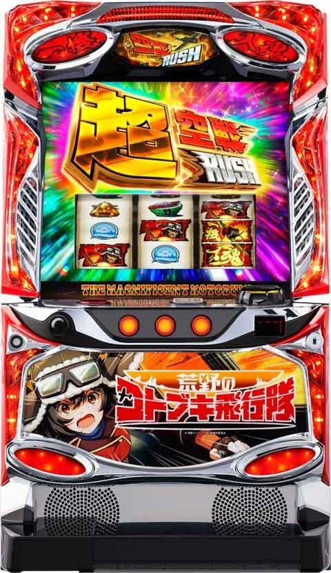
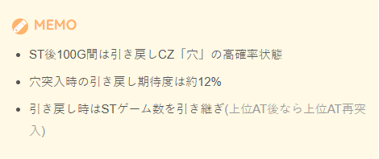
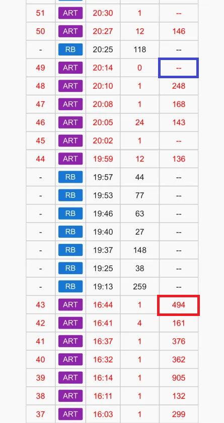
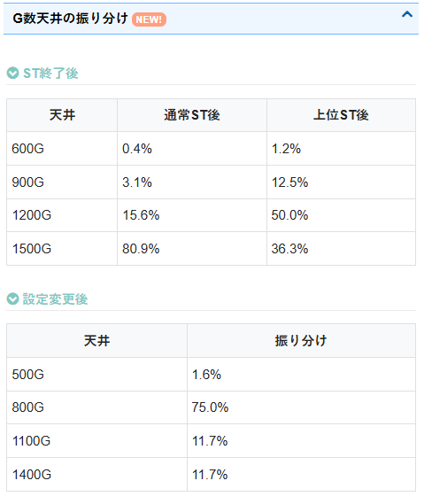
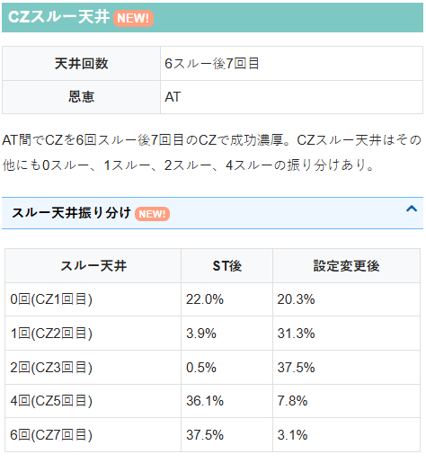
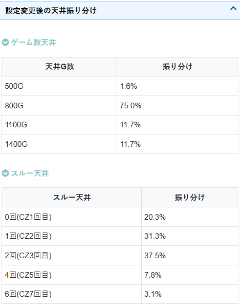
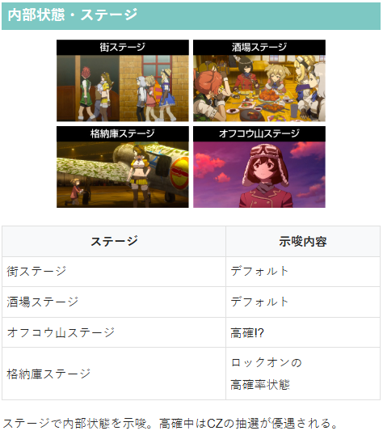
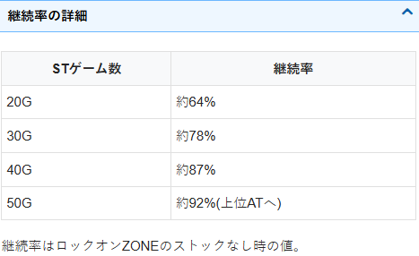

荒野のコトブキ飛行隊

【天井情報】
通常時を1500G＋α消化でATに当選。
天井ゲーム数はその他にも600G、900G、1200Gの振り分けあり。
CZ間天井無し。
設定変更時に天井短縮無し。
AT間でCZを6回スルー後7回目のCZで成功濃厚。
CZスルー天井はその他にも0スルー、1スルー、2スルー、4スルーの振り分けあり。
【リセット判別】
不明
【有利区間について】
エンディング後は92%ループの上位ATからスタートするツラヌキタイプ。
狙い目
【リセット狙い】
AT間 400Gから
CZスルー回数 2スルーからAT当選まで
【ゲーム数天井狙い】
AT間
下位AT後 1000Gから
上位AT後 870Gから
CZスルー回数別
4スルー CZ当選まで
5スルー 積極派 AT当選まで 慎重派 AT間800G以上でAT当選まで
6スルーからAT当選まで
【ゾーン狙い】
不明
【示唆関連の押し引きについて】
不明
【有利区間関連狙い】
差枚+1400枚以上かつ0スルー CZ当選まで
※上位ST突入で有利区間リセットされると想定。
やめ時
STが40G以上（50G以上で上位AT）なら引き戻し確認？
上位AT後は引き戻し確認。
それ以外は即やめで良さそう

その他
履歴からの上位後、下位後の見分け方
上位ST後（赤枠）は16:44の様に獲得枚数が有るARTで終了している。
下位ST後（青枠）は20:14の様に獲得枚数が無いARTで終了している。
また、今回の履歴ではマイナスの獲得枚数を確認出来ないが、STが長いほどメダルの減少数が大きくなるため、ARTの最後（下記画像でいう青枠）の履歴の枚数が-70枚未満だと長いSTで終了している可能性がアップ？通常は-30枚～-50枚くらい。






参考元
基本情報
- メーカー: スパイキー
- 機械割: 97.4% 〜 110.8%
- 導入開始日: 2025年10月20日（月）
- ゲーム性概要: ●人気アニメ「荒野のコトブキ飛行隊」とのタイアップ機が登場！ ●通常時はおもにCZ成功でSTに突入 ●STは初期20GでCZを成功させるとボーナスや特化ゾーンに当選 ●特化ゾーンではSTゲーム数を最大50Gまで上乗せ可能 ●STゲーム数が50G到達で上位AT「超空戦ラッシュ」に昇格 ●上位ATは常に純増約7.0枚/G、継続率は約92%（設定2）と超強力だ ●ST・上位AT終了後は引き戻しのチャンスあり！


打ち方
打ち方・小役
打ち方（小役狙い）
「最初に狙う絵柄」 左リールに赤7を狙う。基本的に中・右リールはフリー打ちでも小役の取りこぼしはないが、超レア役は右リールに3連絵柄を狙わないと判別は難しい。
「レア役の停止形」 右リールに3連絵柄が止まれば超レア役（逆押し狙え時を除く）。 目押しをしなかった場合、超スイカ＝スイカ、超チェリー＝強チェリー、超チャンス目＝チャンス目1と同じ停止形となるので判別できない。 レア役の払い出しはすべて1枚だ。
「ロックオン停止」 通常時（おもに格納庫ステージ中）やST中の狙えを契機に停止する可能性あり。1個＜2個＜3個停止の順に各種期待度がアップする。
「一機入魂目」 CZ中やボーナス中の逆押し狙え時に停止する可能性あり。右リールに3連絵柄が止まれば一機入魂目。
変則押しはNG
通常時、押し順ナビなし時は左リール第1停止での消化を推奨する。
解析情報通常時
小役関連
ロックオン絵柄停止
通常時・ST中の狙えを経由して停止する可能性があり、停止個数が多いほど期待度がアップする（1個＜2個＜3個）。
レア役確率（設定2）
| 役 | 確率 |
|---|---|
| 弱チェリー | 1/99.9 |
| スイカ | 1/76.2 |
| チャンス目 | 1/163.8 |
| 強チェリー | 1/399.6 |
| 超チェリー | 1/4096.0 |
| 超スイカ | 1/4096.0 |
| 超チャンス目 | 1/2978.9 |
| ロックオン1個 | 1/10.2 |
| ロックオン2個 | 1/27.0 |
| ロックオン3個 | 1/481.9 |
| 一機入魂目 | 1/7.0 |
レア役合算確率（設定2）
| 役 | 確率 |
|---|---|
| レア役合算 | 1/31.5 |
| 超レア役合算 | 1/1213.6 |
| 全レア役合算 | 1/30.7 |
| ロックオン合算 | 1/7.3 |
ロックオン確率は格納庫ステージ中とAT中の抽選値。一機入魂目確率は富嶽襲来ゾーンの狙え高確率中・月夜の用心棒中・（ハイパー）ロックオンゾーン中・ボーナス中のホールド中及び決戦中の抽選値だ。
小役のおもな抽選内容
| 役 | 通常 | 高確中 | 格納庫中 |
|---|---|---|---|
| リプレイ | ー | ー | ロックオン 停止 |
| スイカ | CZ抽選あり | 格納庫以上に 期待 | CZ抽選あり |
| 弱チェリー | 高確移行の チャンス | CZ抽選あり | CZ抽選あり |
| 強チェリー | 格納庫以上の 大チャンス | 格納庫以上の 大チャンス | CZ以上の 大チャンス |
| チャンス目 | 格納庫以上の チャンス | 格納庫以上の 大チャンス | CZ以上の 大チャンス |
| 超レア役 | CZ以上濃厚 | CZ以上濃厚 | CZ以上濃厚 |
レア役で高確や格納庫へ昇格させて、CZ当選を目指すゲーム性。超レア役は滞在状態不問でCZ以上濃厚となる（ST終了後100Gの引き戻しゾーン中は引き戻しゾーン専用のCZ「穴」に当選）。
内部状態関連
内部状態概要
高確中は格納庫ステージ移行のチャンス。滞在中はオフコウ山ステージへ移行しやすい。
内部状態解説
| 項目 | 内容 |
|---|---|
| 状態の種類 | 通常＜高確 |
| 高確の恩恵 | 格納庫ステージへの移行期待度がアップ |
ロックオン高確
50G消化ごとやレア役成立時に移行する可能性がある、ロックオン絵柄の高確率状態。ここでロックオン絵柄を止めて前兆→CZというのが、基本的なCZまでのルートとなる。
内部状態移行率
| 役 | 通常→高確 | 高確→通常 |
|---|---|---|
| 下記以外 | 0.4% | 6.3% |
| 弱チェリー | 51.2% | ー |
| 弱チェリー以外のレア役 | ー | ー |
高確移行契機のメインは弱チェリー。高確中はレア役以外成立時に転落を抽選する。
格納庫ステージ移行率
「ゲーム数消化での格納庫ステージ移行処理」
格納庫モードごとの格納庫ステージ移行率＆トータル期待度
| モード | 移行率 | トータル期待度 |
|---|---|---|
| モード1 | 0.2% | 3.0% |
| モード2 | 0.9% | 16.7% |
| モード3 | 2.1% | 35.0% |
| モード4 | 5.5% | 66.7% |
| モード5 | 11.5% | 90.0% |
格納庫モードの滞在ゲーム数振り分け
| ゲーム数 | 振り分け |
|---|---|
| 16G | 54.7% |
| 24G | 39.1% |
| 32G | 6.3% |
7G消化後・格納庫ステージからの転落率
| 役 | 転落率 |
|---|---|
| ハズレ・リプレイ・ベル | 75.0% |
格納庫ステージの保障ゲーム数は7Gで、8G目から転落が抽選される。
ゲーム数消化での格納庫モード（1〜5）移行は、格納庫テーブルに応じて抽選。それぞれの格納庫モード移行後は16or24or32G＋α滞在する。 設定変更時を除き、ゲーム数はST・上位AT後100G消化後（引き戻しゾーン終了後）からカウント。最初のテーブル分を消化し終えると、次のテーブルが抽選される。
「レア役契機の格納庫ステージ移行」
レア役での格納庫ステージ移行率
| 役 | 通常滞在時 | 高確滞在時 |
|---|---|---|
| 下記以外 | ー | 3.1% |
| スイカ | ー | 54.7% |
| 強チェリー | 89.8% | 76.6% |
| チャンス目 | 47.7% | 77.3% |
※下記以外…ロックオン・レア役を除く全役
滞在状態と成立役を参照して、格納庫ステージへの移行を抽選。高確滞在時の強チェリーはCZ当選率が高い分、通常滞在時に比べて格納庫ステージ移行率が低い。 強チェリーとチャンス目は通常滞在時でも格納庫ステージ移行のチャンス。強チェリーで格納庫ステージへ移行しなかった場合、フェイクを含むCZ前兆濃厚となる。
「フェイク前兆終了後の格納庫ステージ移行抽選」 フェイク前兆終了後にも格納庫ステージ移行が抽選され、当選時は1Gの前兆を経由して格納庫ステージへ移行する。
フェイク前兆当選時の格納庫ステージ当選率
| 設定 | 当選率 |
|---|---|
| 不問 | 6.25% |
CZ
CZ確率
| 設定 | 確率 |
|---|---|
| 2 | 1/212.0 |
| 3 | 1/213.8 |
| 4 | 1/218.0 |
| 5 | 1/219.8 |
| 6 | 1/225.1 |
富嶽襲来ゾーン
15G継続のCZ。5・10・15G目にレア役or一機入魂目が成立すればST濃厚。その他のゲームのレア役では部位破壊抽選がおこなわれていて、部位破壊が発生すると最終ゲームでのラストアタック成功期待度がアップする。
富嶽襲来ゾーン性能
| 項目 | 内容 |
|---|---|
| 契機 | レア役・ロックオン絵柄停止時の抽選 |
| 規定ゲーム数 | 15G |
| 消化中の抽選 | 5・10・15G目に一機入魂目停止でST濃厚、 その他ゲームのレア役では部位破壊を抽選 |
| 一機入魂目確率 | 約1/7 |
| 成功期待度 | 約51% |
「一機入魂目を狙え」 5・10・15G目（液晶上部の迎撃＆最終防衛のマス）で一機入魂目（右リール3連絵柄停止）orレア役成立で成功となり、STに当選する。
「部位破壊」 部位破壊成功で最終ゲーム（15G目）の期待度がアップ。最終ゲームもレア役や一機入魂目停止でST濃厚だが、成立しなかった場合でも部位破壊数に応じてSTが抽選される。
月夜の用心棒
6G以内に一機入魂目orレア役が成立すればST当選となる期待度の高いCZ。
月夜の用心棒性能
| 項目 | 内容 |
|---|---|
| 契機 | レア役・ロックオン絵柄停止時の抽選 |
| 規定ゲーム数 | 6G |
| 消化中の抽選 | 一機入魂目orレア役停止でST濃厚 |
| 一機入魂目確率 | 約1/7 |
| 成功期待度 | 約67% |
［5・10・15G目］成立役別・ポイント振り分け
| ポイント | 一機入魂目・レア役 |
|---|---|
| 1pt | 89.8% |
| 2pt | 9.8% |
| 3pt | 0.4% |
5・10・15G目の成立役に応じてポイントを獲得。1pt獲得した時点で成功濃厚となり、以降は1ptにつきロックオンゾーンを1個ストックする（累計3pt獲得した場合、空戦ラッシュ＋ロックオンゾーン2個ストック）。
［5・10・15G目以外］ポイント獲得率
| ポイント | 弱チェリー スイカ | チャンス目 | 強チェリー | 超レア役 |
|---|---|---|---|---|
| 1pt | ー | ー | ー | ー |
| 2pt | 0.4% | 5.1% | 87.5% | 25.0% |
| 3pt | 0.4% | 5.1% | 12.5% | 75.0% |
強レア役はAT＋ロックオンゾーンストックも濃厚。弱レア役は当選率こそ低いが、当選時は1/2でロックオンゾーンを2個ストックする。
成功当選率
| 役 | 当選率 |
|---|---|
| レア役以外 | 0.4% |
| レア役 | 100% |
狙え発生時のレバーロック発生率
| ロック | ショートロック | ロングロック |
|---|---|---|
| その他 | ー | ー |
| 一機入魂目 | 28.9% | 6.6% |
| 弱チェリー・スイカ | 25.0% | 12.5% |
| チャンス目 | 25.0% | 12.5% |
| 強チェリー | 49.2% | 49.2% |
| 超レア役 | 49.2% | 49.2% |
［レア役］獲得ポイント振り分け
| ポイント | その他 | 弱チェリー | 強チェリー |
|---|---|---|---|
| 0pt | 100% | 68.0% | ー |
| 1pt | ー | 27.3% | ー |
| 2pt | ー | 3.9% | 91.0% |
| 3pt | ー | ー | 6.3% |
| 5pt | ー | 0.4% | 1.6% |
| 10pt | ー | ー | 0.8% |
| 20pt | ー | 0.4% | 0.4% |
| ポイント | スイカ | チャンス目 | 超レア役 |
| 0pt | 68.0% | ー | 100% |
| 1pt | 27.3% | 78.1% | ー |
| 2pt | 3.9% | 17.6% | ー |
| 3pt | ー | 0.4% | ー |
| 5pt | 0.4% | 3.1% | ー |
| 10pt | ー | 0.4% | ー |
| 20pt | 0.4% | 0.4% | ー |
［フェイク前兆終了時］獲得ポイント振り分け
| ポイント | 振り分け |
|---|---|
| 0pt | 20.3% |
| 1pt | 27.7% |
| 2pt | 25.0% |
| 3pt | 18.8% |
| 5pt | 6.3% |
| 10pt | 1.6% |
| 20pt | 0.4% |
レア役成立時とフェイク前兆終了時に、内部的に「CZポイント」を蓄積。累計20ptに到達すると、 次回のフェイク前兆がCZ本前兆に書き換え られる 。
前兆
前兆ゲーム数振り分け 格納庫ステージ以外
| 前兆 | フェイク | 富嶽襲来ゾーン | 月夜の用心棒 |
|---|---|---|---|
| 2G | ー | 12.5% | 12.5% |
| 3G | ー | 1.6% | 3.1% |
| 4G | ー | 1.6% | 3.1% |
| 5G | ー | 1.6% | 3.1% |
| 15G | 12.5% | 1.6% | 3.1% |
| 16G | 87.5% | 75.0% | 62.5% |
| 17G | ー | 1.6% | 3.1% |
| 18G | ー | 1.6% | 3.1% |
| 19G | ー | 1.6% | 3.1% |
| 20G | ー | 1.6% | 3.1% |
格納庫ステージ中
| 前兆 | フェイク | 富嶽襲来ゾーン | 月夜の用心棒 |
|---|---|---|---|
| 2G | ー | ー | ー |
| 3G | ー | ー | ー |
| 4G | ー | 12.5% | 12.5% |
| 5G | ー | 6.3% | 12.5% |
| 15G | 12.5% | 6.3% | 12.5% |
| 16G | 87.5% | 75.0% | 62.5% |
| 17G | ー | ー | ー |
| 18G | ー | ー | ー |
| 19G | ー | ー | ー |
| 20G | ー | ー | ー |
通常ステージ中の前兆は最大20Gだが、格納庫ステージ中は最大16Gになる。
成功濃厚の富嶽襲来ゾーンの前兆中 ロックオンゾーンストック当選率
| 役 | 当選率 |
|---|---|
| 下記以外 | 0.4% |
| 弱チェリー | 50.0% |
| 強チェリー | 100% |
| スイカ | 50.0% |
| チャンス目 | 100% |
| 超レア役 | 100% |
成功濃厚の富嶽襲来ゾーン前兆中はロックオンゾーンストック抽選がおこなわれる。
CZ・AT当選率
CZ当選率 通常滞在時
| 移行先 | その他 | ロックオン1個 | ロックオン2個 |
|---|---|---|---|
| フェイク前兆 | ー | ー | ー |
| 富嶽襲来ゾーン | ー | ー | ー |
| 月夜の用心棒 | ー | ー | ー |
| 移行先 | ロックオン3個 | 弱チェリー | 強チェリー |
| フェイク前兆 | ー | 0.4% | 5.1% |
| 富嶽襲来ゾーン | ー | ー | 4.7% |
| 月夜の用心棒 | ー | 0.4% | 0.4% |
| 移行先 | スイカ | チャンス目 | 超レア役 |
| フェイク前兆 | 0.8% | 0.8% | ー |
| 富嶽襲来ゾーン | ー | 1.2% | 97.7% |
| 月夜の用心棒 | 0.4% | 0.4% | 2.3% |
高確滞在時
| 移行先 | その他 | ロックオン1個 | ロックオン2個 |
|---|---|---|---|
| フェイク前兆 | ー | ー | ー |
| 富嶽襲来ゾーン | ー | ー | ー |
| 月夜の用心棒 | ー | ー | ー |
| 移行先 | ロックオン3個 | 弱チェリー | 強チェリー |
| フェイク前兆 | ー | 0.4% | 7.8% |
| 富嶽襲来ゾーン | ー | ー | 12.5% |
| 月夜の用心棒 | ー | 0.8% | 3.1% |
| 移行先 | スイカ | チャンス目 | 超レア役 |
| フェイク前兆 | 0.4% | 3.9% | ー |
| 富嶽襲来ゾーン | ー | 5.5% | 75.0% |
| 月夜の用心棒 | 0.8% | 0.8% | 25.0% |
格納庫滞在時
| 移行先 | その他 | ロックオン1個 | ロックオン2個 |
|---|---|---|---|
| フェイク前兆 | ー | 66.4% | 28.9% |
| 富嶽襲来ゾーン | ー | 33.2% | 70.3% |
| 月夜の用心棒 | ー | 0.4% | 0.8% |
| 移行先 | ロックオン3個 | 弱チェリー | 強チェリー |
| フェイク前兆 | ー | ー | 17.2% |
| 富嶽襲来ゾーン | 79.7% | 10.2% | 79.7% |
| 月夜の用心棒 | 20.3% | ー | 3.1% |
| 移行先 | スイカ | チャンス目 | 超レア役 |
| フェイク前兆 | ー | 36.7% | ー |
| 富嶽襲来ゾーン | 10.2% | 62.5% | 50.0% |
| 月夜の用心棒 | ー | 0.8% | 50.0% |
富嶽襲来ゾーン・月夜の用心棒の本前兆中はいずれも成功濃厚の富嶽襲来ゾーンへの昇格を抽選。 強レア役でCZに当選しなかった場合、格納庫ステージ移行のチャンスとなる（強チェリーは格納庫ステージorフェイク前兆以上濃厚）。 高確中のスイカはCZ当選率こそ低いが、当選時は月夜の用心棒濃厚。CZ非当選でも約55%で格納庫ステージへ移行する。
※格納庫ステージ滞在中はフェイク前兆に当選すると6.25%で格納庫ステージが終了（保障ゲーム数があっても終了）
天井
ゲーム数天井振り分け
| ゲーム数 | 設定変更時 | AT終了時 | 上位AT終了時 |
|---|---|---|---|
| 500G | 1.6% | ー | ー |
| 600G | ー | 0.4% | 1.2% |
| 800G | 75.0% | ー | ー |
| 900G | ー | 3.1% | 12.5% |
| 1100G | 11.7% | ー | ー |
| 1200G | ー | 15.6% | 50.0% |
| 1400G | 11.7% | ー | ー |
| 1500G | ー | 80.9% | 36.3% |
CZ回数天井振り分け
| CZ回数 | 設定変更時 | AT・上位AT終了時 （設定2） |
|---|---|---|
| 1回目 | 20.3% | 22.0% |
| 2回目 | 31.3% | 3.9% |
| 3回目 | 37.5% | 0.5% |
| 5回目 | 7.8% | 36.1% |
| 7回目 | 3.1% | 37.5% |
設定変更後はゲーム数・CZ回数ともに天井が優遇される。
フリーズ
ロングフリーズ動画
超空戦ラッシュ（上位AT）へ直行するプレミアムフラグ。発生契機や確率等は調査中。
解析情報ボーナス時
空戦ラッシュ（AT）
空戦ラッシュ概要
20G＋α（最大49Gまで増加）のST。ST中はレア役とロックオン絵柄停止でCZを抽選していて、CZ成功でボーナスor特化ゾーン当選となる。 特化ゾーンでSTのゲーム数を上乗せしていき、50Gに到達すると上位ATの超空戦ラッシュへ昇格する。
空戦ラッシュ性能
| 項目 | 内容 |
|---|---|
| 当選契機 | 通常時のCZ成功時 |
| 規定ゲーム数 | 20G＋αのST型 |
| 消化中の抽選 | レア役・ロックオン絵柄でCZを抽選 |
| CZ確率 | 1/8.3 |
| 継続率 | 約64～91% （初回はCZストックが1個以上あるので継続率約85%） |
CZ当選期待度
| 役 | 期待度 |
|---|---|
| ロックオン1個 | 低 |
| 弱チェリー・スイカ | ↓ |
| ロックオン2個 | ↓ |
| チャンス目・強チェリー | ↓ |
| ロックオン3個 | 高 |
導入エピソード中の抽選
空戦ラッシュ開始時の導入エピソード中は、全役でロックオンゾーン（ハイパー）を抽選。レア役はロックオンのストック濃厚となる。
導入エピソード中のロックオンゾーン当選率（設定2）
| 役 | 当選率 |
|---|---|
| レア役以外 | 3.9% |
| レア役 | 100% |
レア役成立時・ロックオンハイパー当選率
| 役 | 当選率 |
|---|---|
| 弱チェリー | 0.4% |
| スイカ | 0.4% |
| チャンス目 | 3.1% |
| 強チェリー | 25.0% |
| 超レア役 | 100% |
CZ当選率（設定2）
| 役 | ロックオンゾーン | スペシャル バトル | ロックオンゾーン ハイパー |
|---|---|---|---|
| ロックオン1個 | 16.0% | 0.8% | 0.4% |
| ロックオン2個 | 62.5% | 6.3% | 0.8% |
| ロックオン3個 | ー | ー | 100% |
| 弱チェリー | 48.0% | 1.6% | 0.4% |
| スイカ | 48.0% | 1.6% | 0.4% |
| チャンス目 | 88.3% | 10.9% | 0.8% |
| 強チェリー | 67.2% | 31.3% | 1.6% |
| 超レア役 | ー | ー | 100% |
CZ当選時の前兆ゲーム数振り分け ロックオンゾーン当選時
| 役 | 当該告知 | 1G後 | 2G後 | 3G後 |
|---|---|---|---|---|
| ロックオン1個 | 3.1% | 6.3% | 90.6% | ー |
| ロックオン2個 | 12.5% | 12.5% | 75.0% | ー |
| ロックオン3個 | 100% | ー | ー | ー |
| 弱チェリー | 6.3% | 6.3% | 87.5% | ー |
| スイカ | 6.3% | 6.3% | 87.5% | ー |
| チャンス目 | 6.3% | 6.3% | 87.5% | ー |
| 強チェリー | 6.3% | 6.3% | 87.5% | ー |
スペシャルバトル当選時
| 役 | 当該告知 | 1G後 | 2G後 | 3G後 |
|---|---|---|---|---|
| ロックオン1個 | 12.5% | 6.3% | 6.3% | 75.0% |
| ロックオン2個 | 12.5% | 6.3% | 6.3% | 75.0% |
| ロックオン3個 | 100% | ー | ー | ー |
| 弱チェリー | 12.5% | 6.3% | 6.3% | 75.0% |
| スイカ | 12.5% | 6.3% | 6.3% | 75.0% |
| チャンス目 | 12.5% | 6.3% | 6.3% | 75.0% |
| 強チェリー | 12.5% | 6.3% | 6.3% | 75.0% |
ロックオンゾーンハイパー当選時
| 役 | 当該告知 | 1G後 | 2G後 | 3G後 |
|---|---|---|---|---|
| ロックオン1個 | 6.3% | 23.8% | 69.9% | ー |
| ロックオン2個 | 12.5% | 12.5% | 75.0% | ー |
| ロックオン3個 | 100% | ー | ー | ー |
| 弱チェリー | 6.3% | 6.3% | 87.5% | ー |
| スイカ | 6.3% | 6.3% | 87.5% | ー |
| チャンス目 | 6.3% | 6.3% | 87.5% | ー |
| 強チェリー | 6.3% | 6.3% | 87.5% | ー |
| 超レア役 | 12.5% | 12.5% | 75.0% | ー |
ストック使用時
| 役 | 当該告知 | 1G後 | 2G後 | 3G後 |
|---|---|---|---|---|
| 不問 | ー | 46.9% | 46.9% | 6.3% |
ストック使用時を除き、前兆が3G続けばスペシャルバトル濃厚（本前兆の場合）。
AT（上位AT含む）中のCZ
ロックオンゾーン（ハイパー）
3G以内にレア役or一機入魂目が止まれば成功。成功後はテイクオフチャンスで報酬を決定する。
ロックオンゾーン性能
| 項目 | 内容 |
|---|---|
| 契機 | ST中のレア役・ロックオン絵柄停止時の抽選 |
| 継続ゲーム数 | 3G |
| 消化中の抽選 | レア役or一機入魂目停止で成功 |
| 一機入魂目確率 | 約1/7 |
| 成功期待度 | 約38% |
「ロックオンゾーンハイパー」 突入した時点で成功濃厚。3G以内にレア役or一機入魂目が止まれば激闘ラッシュorコトブキアタックのいずれかを獲得できる。
ロックオンゾーン・成功当選率
| 役 | 当選率 |
|---|---|
| 下記以外 | 0.4% |
| 一機入魂目 | 100% |
| レア役 | 100% |
成功時・トリガーロックの発生タイミング振り分け
| 役 | 第1停止時 | 第2停止時 | 第3停止時 |
|---|---|---|---|
| 下記以外 | 33.6% | 33.2% | 33.2% |
| 一機入魂目 | 1.2% | 1.2% | 1.2% |
| 弱チェリー | 75.0% | ー | 25.0% |
| スイカ | 75.0% | ー | 25.0% |
| チャンス目 | 75.0% | ー | 25.0% |
| 強チェリー | ー | ー | ー |
| 超レア役 | ー | ー | ー |
勝利時の一部でトリガーロックが発生する。
ロックオンゾーン失敗時・引き戻し当選率
| 狙え | 当選率 |
|---|---|
| 非発生 | 6.3% |
| 1回以上発生 | 0.4% |
3G間で一度も狙えが発生しなかった場合は引き戻し期待度がアップ。
狙え発生時のレバーロック種別振り分け
| ロック | 一機入魂目 フェイク | 一機入魂目 | 弱チェリー スイカ |
|---|---|---|---|
| ロックなし | ー | 9.4% | 5.5% |
| ショートロック | 3.5% | 23.4% | 18.0% |
| ロングロック | ー | 1.6% | 1.6% |
| ロックなしで当たり | 83.6% | 26.2% | 68.8% |
| ドックン発生 | 12.9% | 39.5% | 6.3% |
| ロック | チャンス目 | 強チェリー | 超レア役 |
| ロックなし | 5.5% | ー | ー |
| ショートロック | 18.0% | 75.0% | 75.0% |
| ロングロック | 1.6% | 25.0% | 25.0% |
| ロックなしで当たり | 68.8% | ー | ー |
| ドックン発生 | 6.3% | ー | ー |
※一機入魂目・レア役以外での狙えはリールロックなしで発生
ロック種別ごとのカットインの色
| ロックなし | 青カットイン |
|---|---|
| ショートロック | 緑カットイン |
| ロングロック | 赤カットイン |
ロック種別とカットイン色が矛盾した場合は一機入魂目停止濃厚。狙え発生時の第1停止を押す前にPUSHボタンを押して、一機入魂ランプが点滅すれば一機入魂目停止濃厚となる（下パネル消灯時も一機入魂目停止濃厚）。
［カットインの色に注目］
コトブキバースト
ロックオンゾーン成功の次ゲームで一機入魂目が成立すると、コトブキバーストが発生。発生した時点で獲得枚数300枚以上のビッグボーナス濃厚で、一機入魂目が連続して成立するごとにボーナスの枚数が倍々に昇格していく。 一機入魂目が連続して成立する必要があるためかなり難しいが、最大で2400枚まで獲得できる可能性あり（ロックオンゾーン成功後、4G連続で一機入魂目成立で2400枚）。
スペシャルバトル
5G継続の高期待度CZ。突入時に成功抽選がおこなわれ、漏れた場合はバトル中の全役で成功への書き換えが抽選される。レア役成立で成功濃厚だ。
スペシャルバトル性能
| 項目 | 内容 |
|---|---|
| 契機 | ST中のレア役・ロックオン絵柄停止時の抽選 |
| 継続ゲーム数 | 5G |
| 消化中の抽選 | 突入時に成功抽選、消化中は書き換え抽選 （レア役は成功濃厚） |
| 成功期待度 | 約60% |
スペシャルバトル突入時・成功当選率
| 設定 | 当選率 |
|---|---|
| 2 | 50.0% |
スペシャルバトル中・成功当選率
| 役 | 当選率 |
|---|---|
| 下記以外 | 2.3% |
| レア役 | 100% |
内部的に成功が決まったあとのレア役では、CZのストックが抽選される。
成功後・CZストック当選率
| 役 | ロックオン ゾーン | スペシャル バトル | ロックオン ゾーンハイパー |
|---|---|---|---|
| ロックオン1個 | 22.7% | 1.2% | 1.2% |
| ロックオン2個 | 91.4% | 6.3% | 2.3% |
| ロックオン3個 | 25.0% | 50.0% | 25.0% |
| 弱チェリー | 22.7% | 1.2% | 1.2% |
| スイカ | 22.7% | 1.2% | 1.2% |
| チャンス目 | 97.7% | 1.2% | 1.2% |
| 強チェリー | 81.3% | 12.5% | 6.3% |
| 超レア役 | ー | ー | 100% |
テイクオフチャンス
テイクオフチャンス概要
AT中のCZ成功後に移行する報酬決定ゾーン。 ビッグボーナス・激闘ラッシュ・コトブキアタックのいずれかを告知する。
激闘ラッシュ以上に期待できるパターン
（超）空戦ラッシュの末尾3・7・0回目は激闘ラッシュ以上のチャンス
CZが一機入魂目＋7揃いで成功すると 激闘ラッシュ以上濃厚 （中・左リールに7を狙うと判別可能）
ロックオンゾーンハイパー自力成功時は 激闘ラッシュ以上濃厚
上記3つの条件が複合するほどコトブキアタックの可能性アップ
ビッグボーナス
ビッグボーナス概要
差枚数管理型のボーナス。レア役成立で枚数がホールドされ、ホールド中は一機入魂目の高確率状態（約1/7）になる。ホールド中に一機入魂目が止まれば激闘ラッシュをストックし、ボーナス終了後に激闘ラッシュへ突入。 激闘ラッシュがSTゲーム数上乗せのメイン契機となるので、いかに激闘ラッシュを獲得できるかが大量出玉へのカギといえる。
ビッグボーナス性能
| 項目 | 内容 |
|---|---|
| 契機 | テイクオフチャンスの報酬 |
| 獲得枚数 | 150枚＋α |
| 1Gあたりの純増 | 約7.0枚 |
| 消化中の抽選 | レア役で枚数ホールド状態へ移行、 ホールド中の一機入魂目で激闘ラッシュをストック |
「ホールド状態」
「激闘ラッシュ獲得」
ホールド当選率
| ホールド | 弱チェリー | 強チェリー | スイカ | チャンス目 |
|---|---|---|---|---|
| 2G | 58.6% | ー | ー | 75.0% |
| 3G | ー | 50.0% | ー | ー |
| 5G | 0.4% | 46.9% | 1.2% | 23.4% |
| 10G | 0.4% | 3.1% | 3.9% | 1.6% |
※超レア役は10G固定
ホールド中のレア役と一機入魂目は激闘ラッシュ濃厚。激闘ラッシュ当選後はストックを獲得する。
狙え発生時のレバーロック種別振り分け
| ロック | 一機入魂目 フェイク | 一機入魂目 | 弱チェリー スイカ |
|---|---|---|---|
| なし | 96.5% | 75.0% | 80.5% |
| ショートロック | 3.5% | 23.4% | 18.0% |
| ロングロック | ー | 1.6% | 1.6% |
| ロックなしで当たり | ー | ー | ー |
| ドックン発生 | ー | ー | ー |
| ロック | チャンス目 | 強チェリー | 超レア役 |
| なし | 80.5% | 1.6% | 1.6% |
| ショートロック | 18.0% | 75.0% | 75.0% |
| ロングロック | 1.6% | 23.4% | 23.4% |
| ロックなしで当たり | ー | ー | ー |
| ドックン発生 | ー | ー | ー |
※一機入魂目・レア役以外での狙えはリールロックなしで発生
激闘ラッシュ
激闘ラッシュ概要
1セット5Gのバトル型STゲーム数上乗せ特化ゾーンで、バトルに勝利すればSTゲーム数を上乗せし次のセットへ継続。継続率管理型となっていて最大継続率は82%、レア役による書き換え抽選もある。 1セット目は継続濃厚なので、最低でも1G以上はSTゲーム数を上乗せできる。
激闘ラッシュ性能
| 項目 | 内容 |
|---|---|
| 契機 | テイクオフチャンスの報酬、ビッグ中の抽選 |
| 継続ゲーム数 | 5G＋α |
| 消化中の抽選 | 継続のたびにSTゲーム数を上乗せ、 レア役での継続抽選あり |
| 継続率 | 25.0%・61.7%・69.5%・82.0% |
| 1Gあたりの純増 | 約7.0枚 |
| 平均獲得枚数 | 130枚 |
| 平均上乗せ | 5G |
| 1セット目 | 保障があるので継続濃厚 |
| 5の倍数セット | 継続時は2G以上の上乗せ濃厚 |
激闘ラッシュ中もベルナビが出るので、STゲーム数を上乗せしつつ、出玉を増やすことが可能。
「バトル勝利で上乗せ！」
激闘ラッシュの継続率振り分け
| 継続率 | 振り分け |
|---|---|
| 25.0% | 89.8% |
| 61.7% | 6.3% |
| 69.5% | 3.1% |
| 82.0% | 0.8% |
激闘ラッシュの継続ストック当選率
| 役 | ストック1個 | ストック2個 | トータル当選率 |
|---|---|---|---|
| 下記以外 | 0.4% | ー | 0.4% |
| 弱チェリー | 49.6% | 0.4% | 50.0% |
| 強チェリー | 87.5% | 12.5% | 100% |
| スイカ | ー | 9.8% | 9.8% |
| チャンス目 | 75.0% | 12.5% | 87.5% |
| 超レア役 | ー | 100% | 100% |
［50G非到達時］セット継続時の加算ゲーム数振り分け STゲーム数が50G未満の場合
| 加算ゲーム数 | 5の倍数セット以外 | 5の倍数セット |
|---|---|---|
| ＋1G | 87.5% | ー |
| ＋2G | 3.9% | 64.5% |
| ＋3G | 3.9% | 20.3% |
| ＋5G | 3.9% | 12.5% |
| ＋7G | 0.4% | 2.3% |
| ＋10G | 0.4% | 0.4% |
STゲーム数が50G以上の場合（エクストラゲーム数加算）
| 加算ゲーム数 | 5の倍数セット以外 | 5の倍数セット |
|---|---|---|
| ＋1G | 52.3% | ー |
| ＋2G | 25.0% | ー |
| ＋3G | 18.8% | 54.3% |
| ＋5G | 3.5% | 20.3% |
| ＋7G | ー | 20.3% |
| ＋10G | 0.4% | 5.1% |
超空戦ラッシュ（STゲーム数が50G）到達後は、セット継続のたびにエクストラゲーム数を獲得する。
コトブキアタック
コトブキアタック概要
STゲーム数の大量上乗せに期待できるプレミアム特化ゾーン。5G＋α間、毎ゲーム5〜30Gが上乗せされる。
コトブキアタック性能
| 項目 | 内容 |
|---|---|
| 契機 | テイクオフチャンスの報酬 |
| 初期ゲーム数 | 5G＋α |
| 消化中の抽選 | 成立役に応じてSTゲーム数5～30Gを上乗せ |
加算STゲーム数振り分け
| ゲーム数 | その他 | ロックオン1個 | ロックオン2個 |
|---|---|---|---|
| ＋5G | 72.3% | ー | ー |
| ＋10G | 1.6% | 93.4% | ー |
| ＋15G | 0.8% | ー | 68.8% |
| ＋20G | 0.4% | 6.3% | 25.0% |
| ＋30G | ー | 0.4% | 6.3% |
| ゲーム数 | ロックオン3個 | その他レア役 | 強チェリー |
| ＋5G | ー | ー | ー |
| ＋10G | ー | ー | ー |
| ＋15G | ー | 68.8% | ー |
| ＋20G | 75.0% | 25.0% | 75.0% |
| ＋30G | 25.0% | 6.3% | 25.0% |
※超レア役は＋30G固定 ※その他レア役…弱チェリー・スイカ・チャンス目
5G間（保障中）はロックオン停止やレア役以外でも最低5Gを上乗せ。6G目以降の上乗せ非当選（ロックオン停止やレア役以外成立時の約25%）で終了する。 抽選値は上表の通りだが、コトブキアタック中はロックオンが成立しても狙えが発生しないため、見た目で停止個数を判別することはできない。
超空戦ラッシュ（上位AT）
上位AT概要
空戦ラッシュ中にSTゲーム数を50Gまで上乗せすれば、超空戦ラッシュへ突入。 基本的なゲーム性は空戦ラッシュと共通で、CZクリアでボーナスや特化ゾーンを獲得。純増約7枚なので、出玉増加スピードが速いのも特徴だ。 STゲーム数の上限は50Gなので、超空戦ラッシュ中の上乗せはエクストラゲーム数（次セット専用のSTゲーム数）に変化する。
超空戦ラッシュ性能
| 項目 | 内容 |
|---|---|
| 契機 | STゲーム数50G到達後 |
| 継続ゲーム数 | 50G＋α（エクストラゲーム数分） |
| 1Gあたりの純増 | 約7.0枚 |
| 消化中の抽選 | レア役・ロックオン絵柄でCZを抽選 |
| 継続率 | 92%以上（設定2） |
「エクストラゲーム数」 超空戦ラッシュ中限定のSTゲーム数で、上記画像の場合、50G＋37Gが超空戦ラッシュの継続ゲーム数。エクストラゲーム数は消化し切るまで活用可能なSTゲーム数だ。
引き戻しゾーン＆穴（引き戻しCZ）
引き戻しゾーン概要
ST・上位AT終了後は100Gの引き戻しゾーンへ移行。引き戻しゾーン中は専用CZ「穴」を抽選していて、CZ成功で前回の状態を引き継いだSTやATに復帰する。 100G間は何度でもCZ当選の可能性がある。
引き戻しゾーン性能
| 項目 | 内容 |
|---|---|
| 契機 | ST・上位AT終了後 |
| 継続ゲーム数 | 100G |
| 消化中の抽選 | 穴（CZ）を抽選 |
穴概要
引き戻しゾーン専用の5G継続のCZで、全役でATの引き戻しを抽選。期待度は約12%とあまり高くないが、100G間は何度でも当選する可能性あり。 穴成功後は前回のSTや上位ATを引き継ぐので、もうちょっとでSTゲーム数が50Gに届くといった時や上位AT終了後は特に引き戻しに期待したい。
穴性能
| 項目 | 内容 |
|---|---|
| 契機 | 引き戻しゾーン中の抽選 |
| 継続ゲーム数 | 5G |
| 消化中の抽選 | 全役で引き戻しを抽選 |
| 引き戻し時 | 前回のST・上位ATの状態を引き継いで復帰 |
成功当選率
| 役 | 当選率 |
|---|---|
| 下記以外 | 0.4% |
| 弱チェリー | 50.0% |
| スイカ | 50.0% |
| 強チェリー | 100% |
| チャンス目 | 100% |
| 超レア役 | 100% |
本前兆中のST・上位AT直撃当選率
| 役 | 当選率 |
|---|---|
| 下記以外 | ー |
| 弱チェリー | 0.4% |
| スイカ | 0.4% |
| 強チェリー | 25.0% |
| チャンス目 | 12.5% |
| 超レア役 | 100% |
穴の本前兆中に引いたレア役では、ST直撃への書き換えが抽選される（上位AT終了後は上位ATへ書き換え）。
穴の前兆ゲーム数振り分け
| 前兆 | その他 | 弱チェリー | 強チェリー |
|---|---|---|---|
| 当該ゲーム告知 | 25.0% | 25.0% | 100% |
| 1G | 12.5% | 12.5% | ー |
| 2G | 12.5% | 12.5% | ー |
| 3G | 50.0% | 50.0% | ー |
| 前兆 | スイカ | チャンス目 | 超レア役 |
| 当該ゲーム告知 | 25.0% | 100% | 100% |
| 1G | 12.5% | ー | ー |
| 2G | 12.5% | ー | ー |
| 3G | 50.0% | ー | ー |
演出情報
通常時
ステージの示唆
| ステージ | 示唆 |
|---|---|
| 街ステージ | デフォルト |
| 酒場ステージ | デフォルト |
| オフコウ山ステージ | 高確示唆 |
| 格納庫ステージ | ロックオン高確 |
［街ステージ］
［酒場ステージ］
［オフコウ山ステージ］
［格納庫ステージ］
前兆ステージ
「羽衣丸ステージ」
「空賊急襲モード」 CZの前兆ステージ。羽衣丸ステージ＜空賊急襲モードの順に期待度がアップする。
連続演出のチャンスパターン
連続演出中、1Gで2回チャンスアップ（チャンスエフェクト発生・赤文字など）が発生した場合は成功濃厚。最終ゲームでの突カットイン発生も成功濃厚となる。突カットインは連続演出の最終ゲームまでに1回もチャンスアップが発生しなかった場合に発生する可能性がある。
［突カットイン］
帯電色ごとの示唆
| 色 | 格納庫ステージ移行期待度 |
|---|---|
| 青 | 全モードの可能性あり |
| 緑 | 格納庫モード3以上濃厚 |
| 赤 | 格納庫モード5以上濃厚 |
リール下部のゲーム数カウンタの帯電色で、格納庫モードを示唆する。
狙えカットインごとのロックオン絵柄停止割合
| パターン | 1個停止 | 2個停止 | 3個停止 |
|---|---|---|---|
| 狙えの指示のみ | 77.3% | 21.9% | 0.8% |
| 指示＋キリエの1枚絵 | ー | 89.9% | 10.1% |
［狙え＋キリエの1枚絵］
CZ
富嶽襲来ゾーン中の演出期待度・法則
| 演出 | 期待度・法則 |
|---|---|
| 成功濃厚の CZ示唆パターン | ● リール枠黒発光 ● 下パネル点滅 ● 狙えの前ゲームのキリエのセリフが赤 ● 狙えの前ゲームのキリエのセリフが青でレア役を否定 |
| 部位破壊チャンスの タイトル色別の小役示唆 | ● 青：ハズレorチャンス目 ● 緑：弱チェリーorスイカorチャンス目 ● 赤：強チェリーor超レア役 |
| 部位破壊チャンス | ● 第3停止時にキリエの強カットインorデカPUSH出現で最終マスが虹に変化濃厚 |
| 最終マスの 色別期待度 | ● 白：14%以上 ● 赤：86%以上 ● 虹：成功濃厚 |
| 一機入魂目狙えの 色別期待度 | ● 青：27%以上 ● 緑：81%以上 ● 赤or虹：一機入魂目停止濃厚 |
| 最終マス 成功濃厚パターン | ● 第3停止時にキリエカットイン発生 ● 強カットインorPUSHボタンはロックオンゾーンストックあり濃厚 ● 一機入魂狙え発生でロックオンゾーン複数ストックあり濃厚 |
［部位破壊チャンス：赤タイトル］
［一機入魂目狙え：赤］
［最終マス：デカPUSH出現］
月夜の用心棒中の演出期待度・法則
| 演出 | 期待度・法則 |
|---|---|
| 隼通過演出 | ● 第1停止時に隼が通過しなければ成功濃厚 |
| 一機入魂目狙えの 色別期待度 | ● 青：25%以上 ● 緑：80%以上 ● 赤or虹：成功濃厚 |
| 最終ゲーム | ● 一機入魂目狙え以外の演出が発生すれば成功濃厚 |
［隼通過演出］
穴中の演出期待度・法則
4G連続で、第2停止までフラッシュが続けば引き戻し濃厚！
AT（上位AT含む）
導入エピソード中のナビ法則
| 色 | 法則 |
|---|---|
| ベルナビ：白 | ● ロックオンゾーンorロックオンゾーンハイパーストック濃厚 |
| ベルナビ：黒 | ● ロックオンゾーンハイパーストック濃厚 |
| チャンスナビ：赤 | ● ロックオンゾーンハイパーストック濃厚 |
| チャンスナビ＋レア役否定 | ● ロックオンゾーンハイパーストック濃厚 |
演出法則
| 演出 | 法則 |
|---|---|
| 前兆中の 登場キャラ | ● キリエ：デフォルト ● チカ：本前兆期待度アップ ● エンマ：本前兆濃厚 ● ケイト：本前兆濃厚（スペシャルバトルやロックオンゾーンハイパーの期待度アップ） ● ザラ：スペシャルバトル以上の本前兆濃厚 ● レオナ：ロックオンゾーンハイパーの本前兆濃厚 |
| 飛行機通過演出 | ● ハズレ・共通ベル対応 |
| メーター演出 | ● 高速：弱チェリー・スイカ対応 ● 超速：チャンス目・強チェリー対応 ● 鬼速：超レア役対応 |
| シャッター演出 | ● スイカ対応 ● 赤シャッター：CZ本前兆濃厚 ● 漏れる光が赤：CZ本前兆濃厚 |
| 弾痕破砕演出 | ● 第3停止時に画面が割れればチェリー対応 ● 赤：レア役濃厚 ● 赤かつ第1or第2停止止まり：スペシャルバトル以上濃厚 |
| 下パネル消灯 | ● ロックオンゾーンハイパー濃厚 |
| 同じ演出が 3G連続で発生 | ● CZ本前兆濃厚 |
| レバーON時の PUSHボタン表示 | ● CZ本前兆濃厚 ● 赤PUSHは成功濃厚のスペシャルバトルorロックオンゾーン当選濃厚 |
| ロックオン狙え | ● 青カットイン：ロックオンゾーン以上濃厚 ● 緑カットイン：スペシャルバトル以上濃厚 ● 赤カットイン：ロックオンゾーンハイパー濃厚 |
| 掛け合い演出 | ● 青セリフ：レア役濃厚 ● 第3停止の返答：ザラorレオナはCZ本前兆濃厚 |
| 競り合い演出 | ● 優勢：CZ本前兆濃厚（第1停止時に優勢に変わるパターン含む） ● リール回転開始時に発生：ロックオン狙えでなければCZ本前兆濃厚 |
| スペシャルバトル あおり演出 | ● フラッシュバックの回数が多いほど本前兆期待度アップ ● リール回転開始時のフラッシュバックは本前兆濃厚 |
| ST最終ゲーム | ● 演出発生でCZ本前兆濃厚 |
※演出ごとの対応役矛盾でロックオンゾーンorスペシャルバトル本前兆濃厚 ※スペシャルバトル以上…スペシャルバトルorロックオンゾーンハイパー
［ロックオン狙え：赤カットイン］
［弾痕破砕演出］
［競り合い演出］
［疾風迅雷］
演出法則
| パターン | 法則 |
|---|---|
| タイトル色 | ● 赤：勝利濃厚 ● 金：コトブキアタック濃厚 |
| チャンスアップ | ● 1回：勝利期待度アップ ● 2回：勝利濃厚 ● 3回：コトブキアタック濃厚 |
［金タイトル］
［チャンスアップ］
演出法則
| 演出 | 法則 |
|---|---|
| PUSHボタン | ● 赤PUSH：表示されている3つの報酬のうち、最も低い報酬を否定 ● デカPUSH：コトブキアタック濃厚 |
| コトブキアタック 濃厚パターン | ● 3つの報酬がすべて同じ（オールBIGボーナスor激闘ラッシュorコトブキアタック） |
［赤PUSH］
［報酬がすべて同じ］
イルミのキャラごとの上乗せゲーム数示唆
| キャラ | 示唆 |
|---|---|
| キリエorチカ | ＋5G以上 |
| エンマorケイト | ＋10G以上 |
| ザラ | ＋15G以上 |
| レオナ | ＋20or30G |
［キリエ］
［ケイト］
［レオナ］
ボーナス
ATセット開始画面の示唆
| 画面 | 示唆 |
|---|---|
| キリエ：青 | デフォルト |
| キリエ：赤 | ロックオンゾーン1個以上ストックあり濃厚 |
| マダム・ルゥルゥ：赤 | ロックオンゾーン2個以上ストックあり濃厚 |
| キリエ：虹 | ロックオンゾーンハイパーストックあり濃厚 |
※激闘ラッシュやコトブキアタック終了画面も示唆は共通
［キリエ：青］
［マダム・ルゥルゥ：赤］
演出法則
| 演出 | 法則 |
|---|---|
| 一機入魂目狙え | ● 非ホールド中に発生すれば一機入魂揃いかつホールド10G濃厚 |
| ダブルナビ | ● 両方同じ色：ホールド5G以上濃厚 ● 色と成立役が矛盾（※）：ホールド5G以上濃厚 |
※左or中1st時のみ有効
激闘ラッシュ
セット開始画面での継続示唆
| パターン | 示唆 |
|---|---|
| イサオorキリエ | デフォルト |
| チカorエンマorケイト | 継続期待度アップ［小］ |
| ザラorレオナ | 継続期待度アップ［中］ |
| コトブキ飛行隊1人の イラストver | 継続濃厚かつ継続率62%以上 |
| コトブキ飛行隊の コスプレイラスト | 継続濃厚かつ継続率70%以上 |
| ドードー船長＆サネアツ | 継続濃厚かつ高継続期待度アップ［小］ |
| アンナ＆マリア | 継続濃厚かつ高継続期待度アップ［中］ |
| アディ＆ベティ＆シンディ | 継続濃厚かつ高継続期待度アップ［大］ |
［イサオ］
［キリエ］ デフォルトのイサオとキリエ以外が出れば、継続や高継続率の期待度が高まる。
［コスプレ］ ※コスプレは上記以外のパターンも存在
演出法則
| 演出 | 示唆 |
|---|---|
| 2G目のセリフ | ● 赤セリフ or キリエの先制セリフは継続濃厚 ● 金セリフは継続かつ継続率70%以上濃厚 |
| ＋10G濃厚パターン | ● 青の！ナビで弱レア役を否定 ● 赤の！ナビで弱レア役 ● 激熱ナビ出現 |
| 楽曲変化 | ● ソラノネ：継続濃厚 ● カゼノワ：継続かつ継続率70%以上濃厚 |
裏ボタン
一機入魂目狙え発生時の裏ボタン
| タイミング | 富嶽襲来ゾーン・月夜の用心棒・ (ハイパー)ロックオンゾーン・ ATリザルトの一機入魂目狙え発生時 |
|---|---|
| 裏ボタンの内容 | 第1停止ボタンを押す前にPUSHボタンを押す |
| 演出と恩恵 | 一機入魂目停止時の約50%で上部パネルがフラッシュ |
一機入魂目狙え発生時にPUSHボタンを押すと、一機入魂目成立時の約50%で上部パネルがフラッシュする。
激闘ラッシュ中の裏ボタン
| 1セット目の 1G目 | ● PUSHボタンを押すと筐体下部ランプ色で継続率を示唆 →白：全継続率の可能性あり →青：62%以上 →緑：70%以上 →赤：82%濃厚 |
|---|---|
| 2セット目 以降の1G目 | ● PUSHボタンを押すと筐体下部ランプで継続や加算ゲーム数を示唆 →白：示唆なし →青：継続期待度約90% →緑：継続濃厚 →赤：継続＆＋5G以上濃厚 →虹：継続＆＋10G以上濃厚 |
［筐体下部ランプ］